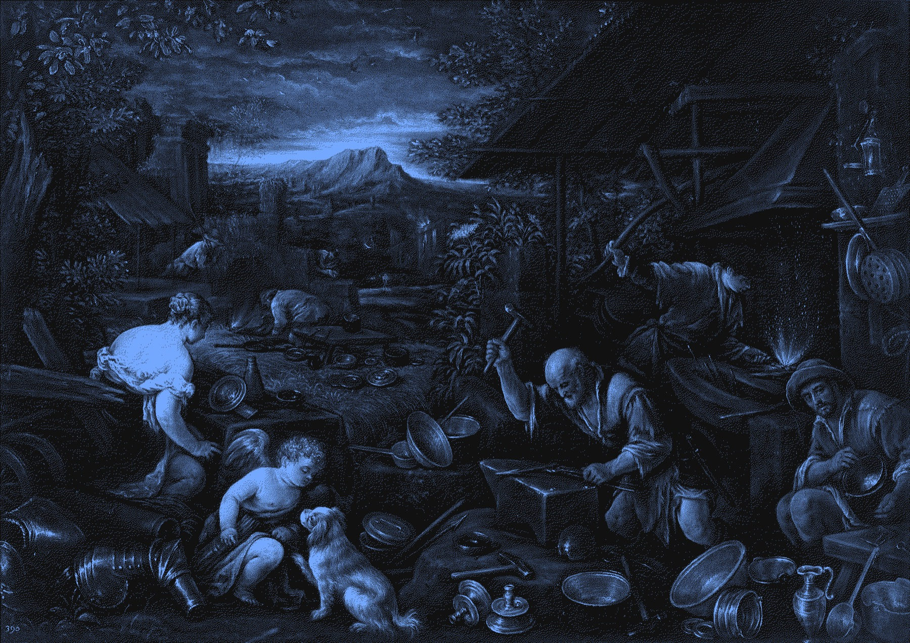
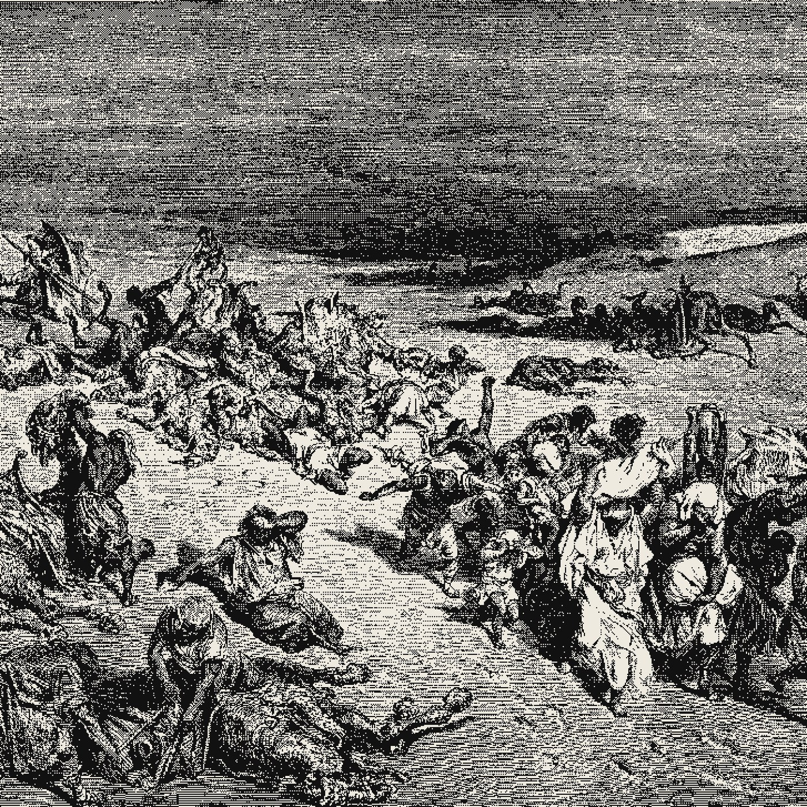

The Quant Label Is No Longer the Spec
Version 0.8.0 of llama.cpp landed on October 28. The headline is not the model list. The interesting change is that the engine now treats quantization as a kernel problem rather than a naming convention.
What that means for your hardware: the quant name on a file tells you how big it is. The kernels compiled into your build tell you how fast it runs. Those two numbers have been drifting apart for a year, and this release makes the gap explicit.
Consider what shipped in the core this week. A tiled Q4_K matrix multiply for Adreno GPUs. A 256 bit SVE kernel for Q6_K on ARM server CPUs. An SVE GEMV path for MXFP4. Fused mixture of experts gate, up projection and GLU in a single CUDA kernel. Top k expert fusion sized for 384 experts. The pattern repeats across backends, and the pattern is the story. The quant format that matters is the one your silicon has a fused path for.
That changes the shopping question. Two files carrying the same label are no longer equivalent. A Q4_K model running through a generic fallback on your GPU can lose to a Q5_K model that hits a fused kernel. The label describes precision. The kernel describes throughput. In a memory bound decode loop, the second number usually decides the experience.
Here is what is measured, what is claimed, and what is uncertain.
Measured. The commit log and release notes are public and specific. Fused MoE work in MMQ, the Adreno tiled GEMM, the SVE kernels for Q6_K and MXFP4, and faster IQ4 quant creation are all in the tree. The ggml bump to v0.28.0 adds top k mask support and negative expert index semantics.
Claimed. The release notes describe large backend performance work without publishing per backend benchmarks. Treat any speedup figure you see quoted for these kernels as unverified until someone runs it on hardware you can name.
Uncertain. How much any single kernel buys depends on your memory bandwidth, your batch size and your context length. A fused expert path matters most when experts are spread across host memory. It matters little when the model already fits in video memory.
The cache change may matter more than any quant tweak. Host resident experts moved from a plain LRU cache to a 50/50 split policy. For mixture of experts models that stream experts from system memory, cache policy decides your hit rate, and hit rate decides your token rate. That is a memory management fix, not a precision fix, and it will show up in long context runs more than in a short prompt.
Two short items from the same release.
The engine became a speech server. The LFM3 family arrived with text, vision, audio and omni variants, and the server gained a realtime endpoint plus a text to speech endpoint. Local inference is no longer only about chat completions.
The model list is long. Flint, Muse Spark, Kolibri and several smaller decision models all landed in one version. The pace at which mainline absorbs new architectures is now faster than most people can test them.
One correction is worth recording. DeepSeek V4.1 Flash support arrived through a separate pull request, while the proposal that had been open for a month closed without merging. The architecture this page has been calling blocked is now in mainline.

So the practical rule for the week: read the kernel list for your backend before you read the quant name. Four bit is not a quality tier any more. It is a family of code paths, and only some of them are fast.
The format wars are over. The kernel wars have started.
Sources
- llama.cpp, Release v0.8.0, October 28, 2026.
- llama.cpp pull request #31188, fused MoE gate, up projection and GLU in MMQ.
- llama.cpp pull request #31288, top k MoE fusion for 384 experts.
- llama.cpp pull request #30412, tiled Q4_K GEMM for Adreno.
- llama.cpp pull request #27472, SVE 256 bit Q6_K kernel.
- llama.cpp pull request #28141, SVE 256 bit MXFP4 GEMV kernel.
- llama.cpp pull request #30637, 50/50 SLRU cache for host resident MoE experts.
- llama.cpp pull request #31086, DeepSeek V4.1 Flash support.